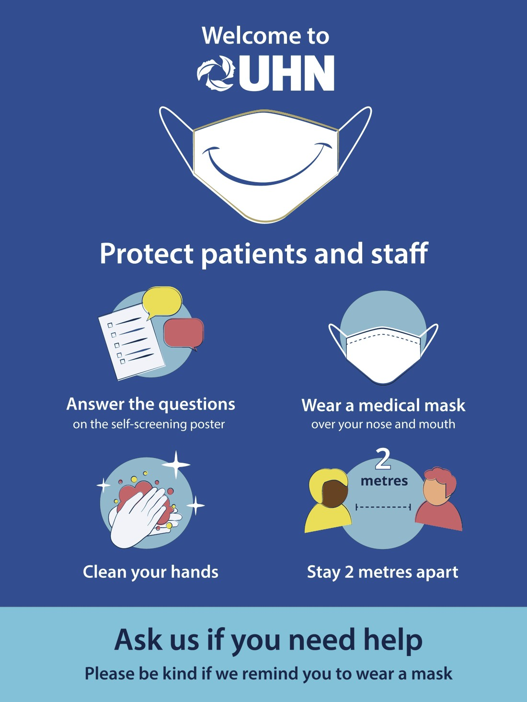

Before

After PRISM · AAA

“Ask us if you need help” now stands out 3.7 times as much.
AA needs 4.5 : 1, AAA needs 7 : 1.
2 band lines, 2 small captions and “metres”.
Every line now passes AAA.
Yellow and red figures stay apart for red-green colour blindness: 2.6 : 1.
No change needed. Nothing relies on colour alone.
Before
After PRISM · AAA

Poster: COVID welcome poster for UHN (June 2022), designed by Sonia Seto